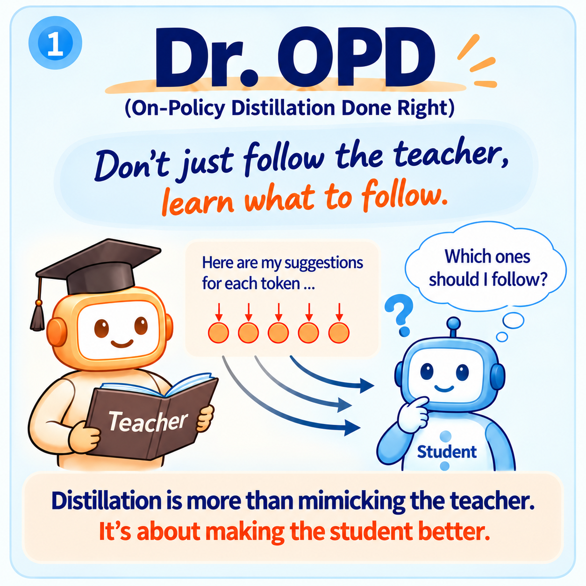
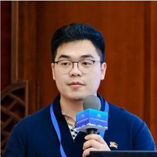
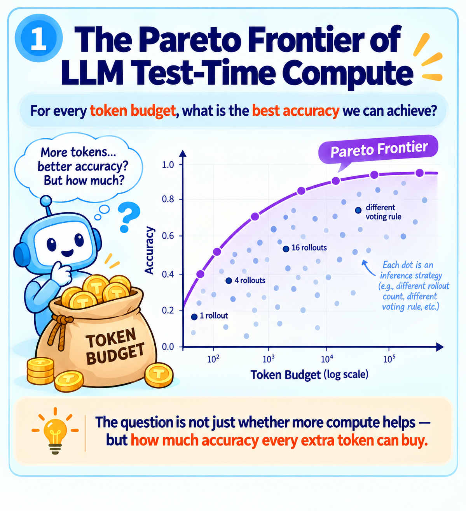
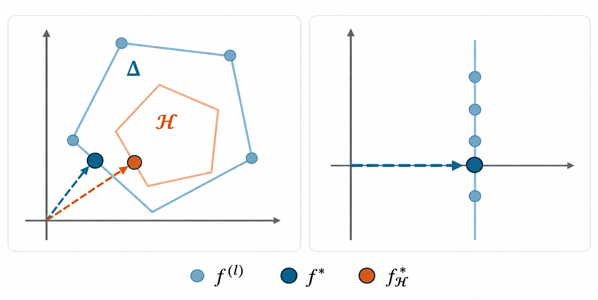

LLM learning
Dr. OPD
Which teacher signals make a better student?
OPD provides dense token-level supervision. We formulate optimal OPD as bilevel optimization, learning how to weight teacher signals to improve the student’s performance.

Ph.D. Candidate in Statistics · Rutgers University
I am a Ph.D. candidate in Statistics at Rutgers University, advised by Zijian Guo and Yifan Hu.
My research spans statistical learning and large language models. My earlier work focuses on distributionally robust learning, causal invariance, and statistical inference. More recently, I have been drawing on ideas from statistics, optimization, and operations research to understand and improve how large language models learn and reason, with a focus on post-training and budget-aware LLM inference.
Before Rutgers, I received my master’s degree from Columbia University and my bachelor’s degree in Finance from Shanghai Jiao Tong University.

PRICE selected for a NeurIPS 2026 workshop oral presentation, and accepted at MLxOR, RAAAI, and TTCL.
New preprint: Dr. OPD, learning what to follow in on-policy distillation.
DRoL published in The Annals of Statistics.

LLM learning
Which teacher signals make a better student?
OPD provides dense token-level supervision. We formulate optimal OPD as bilevel optimization, learning how to weight teacher signals to improve the student’s performance.

LLM reasoning
Also accepted at NeurIPS 2026 workshops: MLxOR · RAAAI · TTCL
How much accuracy can one more token buy?
We derive a closed-form asymptotic cost–accuracy Pareto frontier for LLM test-time compute, then use it to guide adaptive rollouts and voting under a token budget.

Robust learning
A leading journal in statistical theory and methodology.
How do we find the most robust model across data sources?
We identify the model that maximizes worst-case predictive performance over mixtures of source populations, with no target labels required.